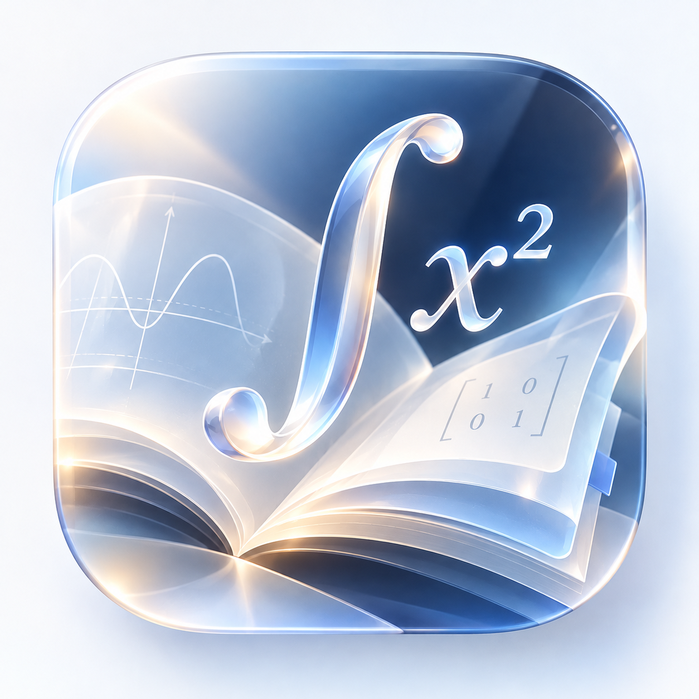

数学二考试范围
考研数学二 · 公式大全
系统整理高等数学与线性代数核心公式，每条含名称 · 表达式 · 成立条件 · 易错提醒。优先保证准确完整，支持搜索与收藏。
0 收藏
12 章节
0 公式
公式渲染组件加载失败，请检查 vendor/ 目录是否完整。
没有找到相关公式
高等数学 · 线性代数

数学二考试范围
系统整理高等数学与线性代数核心公式，每条含名称 · 表达式 · 成立条件 · 易错提醒。优先保证准确完整，支持搜索与收藏。
没有找到相关公式